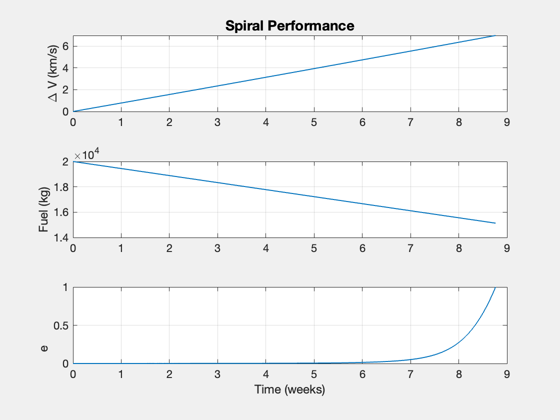
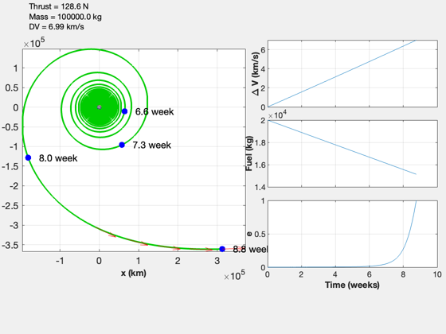
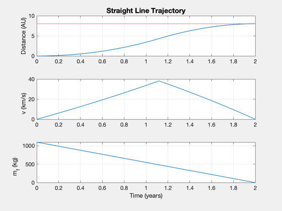

Contents
Enceladus mission
Has the following stages:
1. Spiral out of Earth orbit 2. Straight line to Saturn 3. Spiral to Enceladus orbit about Saturn (unfinished?) 4. Spiral into Enceladus orbit (unfinished?)
%-------------------------------------------------------------------------- % See also: TwoDEscape, StraightLineOptimal, EngineReport, % SimulateStraightLineTrajectory %-------------------------------------------------------------------------- %-------------------------------------------------------------------------- % Copyright (c) 2019 Princeton Satellite Systems, Inc. % All rights reserved. %-------------------------------------------------------------------------- % Constants radiusEnceladus = 252; % km sMAEnceladus = 237948; % km eEnceladus = 0.0047; % eccentricity radiusSaturn = Constant('equatorial radius saturn'); radiusEarth = Constant('equatorial radius earth'); muSun = Constant('mu sun'); muEnceladus = 0.113*radiusEnceladus^2; muSaturn = Constant('mu saturn'); muEarth = Constant('mu earth'); aU = Constant('au'); % Mission parameters specificPower = 1000; % W/kg sigmaTank = 0.02; % fuel tank fraction % Spiral from earth mDry = 80000; % kg mF = 20000; m0 = mDry + mF; mT = sigmaTank*mF; nEngines = 6; p = nEngines*5e6; % W mE = p/specificPower; mP = mDry - mE - mT; uE = 140e3; % m/s eff = 0.3; thrust = 2*p*eff/uE; r = Constant('equatorial radius earth') + 386; disp('Spiral:') mFConsumed = TwoDEscape( muEarth, r, uE, thrust, mDry, mF ); vEarth = sqrt(muSun/aU);
Spiral: Spiral time: 61.34 days Fuel consumed: 4867.27 kg Final radius: 477450.81 km Delta-V: 6.99 km/s Exhaust velocity: 140.00 km/s 
Straight line to Saturn
year = 365.25*86400; d = Straight2DStructure; d.dF = 1.2e9; % 1.67e9 d.eta = eff; d.sigma = specificPower; % W/kg d.tF = 2*year; d.uE = uE/1000; % km/s d.v0 = 0; d.mP = 1000; [uE, thrust, data] = StraightLineOptimal( d ); [~,out] = EngineReport( thrust, data ); SimulateStraightLineTrajectory( out ); fprintf('Straight line:\n Delta-V: %g km/s\n',out.vS*2); %-------------------------------------- % $Date$ % $Id: f9e14f2f94516766a3a5d00e0c579a4fd1d76d5f $
Straight line: Delta-V: 76.4084 km/s